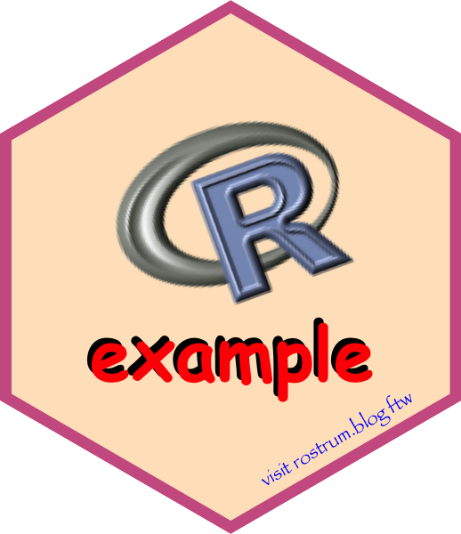

install.packages("remotes") # if not yet installed
remotes::install_github("matt-dray/hexbase")
tl;dr
I’ve made {hexbase}, a simple package to create hex stickers in R. The twist: it relies only on base R packages.
Note
This post is about a package in development, so you can expect that the functions and interface (and maybe other things) may change after this post is written.
Stick around
Hex stickers are obviously popular in the R community and beyond for advertising your package or other projects1. So much so that there are packages to organise your stickers.
There’s some existing tools to help you make these:
- {hexSticker} by Guangchuang Yu
- {bunny} by Dmytro Perepolkin, used in conjunction with {magick}
- the hexmake Shiny app2 by Colin Fay
Surprise, I’ve made another one: {hexbase}. Why? I wanted to learn about low-level plotting with {grid}, one of R’s built-in packages3. The constraint of using only {grid} in a simple, lightweight package seemed a good test (and a good wheeze).
It’s not perfect, but it does what I need and I learnt a lot.
Do the griddy
I reckon most R users make plots with {ggplot2} otherwise R’s native plot()ting system. I’ll bet {grid}4 is used less often. It’s lower-level and you have to build everything up yourself, but it is extremely flexible.
To put it extremely simply, {grid} mostly works through a system of nested ‘viewports’ that you push and pop to add and arrange various graphics objects (grobs5) onto a graphics device.
This post isn’t a how-to for {grid} because there’s too much to cover, though I might write a separate post to explain how {hexbase} uses {grid}. I found Paul Murrell’s writings really helpful, which is no surprise as Paul is {grid}’s author. See also Roger’s chapter for an intro.
However, I did learn a few things I wanted to note to myself:
- the
grDevices::png()function has a handybgargument that you can set to"transparent" - you can clip to a grob, which means you could clip out any text or image that falls outside the hexagon boundary
- you can rotate a viewport but the x and y coordinates will be relative to the angle, so you need to put it inside another viewport that’s relative to the sticker’s coordinates
- the hexagon is not as wide as it is tall, so the x-axis on the default ‘normalised parent coordinate’ system (where the axes are 0 to 1) has to be narrowed by setting the viewport’s
xscaleto hexagon limits, while the hexagon grob must havedefault.units = "native"so it’s placed relative to thatxscale - you can make the border by stacking a smaller hexagin on a bigger one, ensuring that the maximum extent of the sticker will fit inside a unit-1 square
Cast a hex
If you want to give it a go, you can install {hexbase} from GitHub like:
At time of writing, the package is at version 0.1.0. You can install that specific version by adding @v0.1.0 to the end of the string in install_github().
As mentioned, the package only imports {grid} and {grDevices} from base R. Otherwise it’s BYOIAF (‘bring your own images and fonts’) by importing with packages like {png} and by installing your fonts locally. Is that cheating? Nah, the Imports section in the DESCRIPTION file is clean as far as I’m concerned!
You can then build a sticker additively with a series of {hexbase} function calls:
open_device()to set up a PNG graphics device with the dimensions of the Stickers Standard.add_hex()to add the hexagon and border.add_image()to place an image (run multiple times for more images).add_text()to place and style text (run multiple times for more text).close_device()to close the PNG graphics device and save to file.
You can set various text and image properties like position, size, colour and angle. Note that the coordinates are relative to a unit square6 with axes of 0 to 1, a lower-left origin at [0, 0] and a centre at [0.5, 0.5]. Text and images will be clipped if they exceed the boundary of the hexagon. Check the help files for all the explanation.
Below is an extremely basic example to demonstrate a number of features. Note how you call each function independently (i.e. no pipes), much like writing base plots with successive calls to plot(), points(), text(), etc.
# Somewhere to save it
temp_path <- tempfile(fileext = ".png")
# 'Bring your own image', e.g. with {png}
image_path <- system.file("img", "Rlogo.png", package = "png")
image_png <- png::readPNG(image_path)
# Build up and write the sticker
hexbase::open_device( # open with sticker-standard dimensions
file_path = temp_path
)
hexbase::add_hex(
border_width = 0.06,
border_col = "hotpink3",
bg_col = "bisque"
)
hexbase::add_image(
image_object = image_png,
image_y = 0.6, # y = 0.5 is centre
image_angle = 20,
image_width = 0.5 # i.e. half of the npc coord system
)
hexbase::add_text(
text_string = "example",
text_x = 0.495,
text_y = 0.35,
text_col = "#000000", # named colour or hexadecimal
text_family = "Comic Sans MS", # must be installed locally
text_face = "bold" # or 'plain', 'italic', 'bold.italic'
)
hexbase::add_text( # add multiple text/images (in a loop?)
text_string = "example",
text_x = 0.505,
text_y = 0.34,
text_col = "red",
text_family = "Comic Sans MS",
text_face = "bold"
)
hexbase::add_text(
text_string = "visit https://rstats.lol ftw",
text_x = 0.73,
text_y = 0.18,
text_angle = 30, # rotate to match lower-right edge
text_size = 5, # point size
text_col = "blue",
text_family = "Papyrus"
)
hexbase::close_device() # close viewports, write fileYou can then open the image for inspection. A quick way to do this from within R would be like system(paste("open", temp_path)). Note that you can’t rely on plot-window previews (they lie) when you’re developing your sticker. You must inspect the generated PNG file instead.
The (stunning) hex produced by this code can be found at the top of this post. Well done for being able to read this far after you burnt your eyes by looking at it.
Don’t get too hexcited
I might play around with this a bit more if I have time and if I want to delve deeper into {grid}. The {hexbase} package seems to work for my use-case, but it can undoubtedly be improved. Let me know if there’s anything you can unstick. I’d be hexstatic, etc.
Environment
Session info
Last rendered: 2025-02-16 16:09:36 GMTR version 4.4.2 (2024-10-31)
Platform: aarch64-apple-darwin20
Running under: macOS Ventura 13.2.1
Matrix products: default
BLAS: /Library/Frameworks/R.framework/Versions/4.4-arm64/Resources/lib/libRblas.0.dylib
LAPACK: /Library/Frameworks/R.framework/Versions/4.4-arm64/Resources/lib/libRlapack.dylib; LAPACK version 3.12.0
locale:
[1] en_US.UTF-8/en_US.UTF-8/en_US.UTF-8/C/en_US.UTF-8/en_US.UTF-8
time zone: Europe/London
tzcode source: internal
attached base packages:
[1] stats graphics grDevices utils datasets methods base
loaded via a namespace (and not attached):
[1] htmlwidgets_1.6.4 compiler_4.4.2 fastmap_1.2.0 cli_3.6.3.9000
[5] tools_4.4.2 htmltools_0.5.8.1 rstudioapi_0.16.0 yaml_2.3.10
[9] rmarkdown_2.28 knitr_1.48 jsonlite_1.8.9 xfun_0.48
[13] digest_0.6.37 rlang_1.1.4 fontawesome_0.5.2 evaluate_1.0.1 Footnotes
I’ve made a few myself.↩︎
There seems to be a problem with accessing the app at time of writing.↩︎
Base slaps, as they say.↩︎
Though {grid} actually underpins {ggplot2}, so {ggplot2} extension-writers will be familiar.↩︎
I swear this is the name of a Magic: The Gathering creature or something.↩︎
Well, the initial plotting area is a unit-1 square, but the width of the hexagon is less than 1 on this scale, so two slivers are removed from the left and right of the hexagon. You can get the vertex point locations of the hexagon with the unexported
hexbase:::.get_hex_coords(diameter = 1)function.↩︎
Reuse
CC BY-NC-SA 4.0